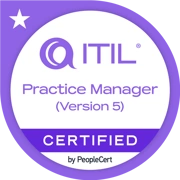
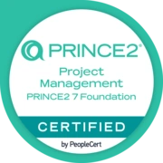
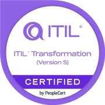
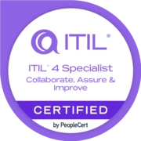
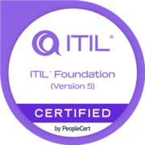
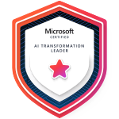

ITIL Practice Manager
Professional designation recognising expertise in IT service management, service assurance and continuous improvement.
View certification (opens in a new tab)I've continued to invest in my professional development throughout my career, building qualifications across IT service management, artificial intelligence, technology and project management. You can explore my certifications below, with links to their digital credentials.
Professional development has been an important part of my career. I enjoy building my knowledge and applying what I've learned to improve services, support colleagues and make better decisions.

Professional designation recognising expertise in IT service management, service assurance and continuous improvement.
View certification (opens in a new tab)
Qualifications covering Microsoft Copilot, AI adoption, AI transformation, Azure AI and Power Platform fundamentals.
Explore Microsoft credentials
A recognised foundation in structured project management, covering the principles, practices and processes used to manage projects effectively.
View certification (opens in a new tab)A collection of the professional certifications I've achieved, with links to verify each credential.
Showing all 10 qualifications.
PeopleCert
View certification (opens in a new tab)
IT SERVICE MANAGEMENTPeopleCert
View certification (opens in a new tab)
IT SERVICE MANAGEMENTPeopleCert
View certification (opens in a new tab)
IT SERVICE MANAGEMENTPeopleCert
View certification (opens in a new tab)
POWER PLATFORM
Microsoft
View certification (opens in a new tab) ARTIFICIAL INTELLIGENCE
ARTIFICIAL INTELLIGENCE
Microsoft
View certification (opens in a new tab)Microsoft
View certification (opens in a new tab)
ARTIFICIAL INTELLIGENCEMicrosoft
View certification (opens in a new tab) ARTIFICIAL INTELLIGENCE
ARTIFICIAL INTELLIGENCE
Microsoft
View certification (opens in a new tab)PeopleCert
View certification (opens in a new tab)Currently preparing for my ITIL Strategy examination as I continue developing my knowledge of strategic technology and service management.
I'm always happy to connect with people who share an interest in technology, leadership and professional development. Whether it's exchanging ideas, sharing experiences or discussing opportunities, feel free to get in touch.